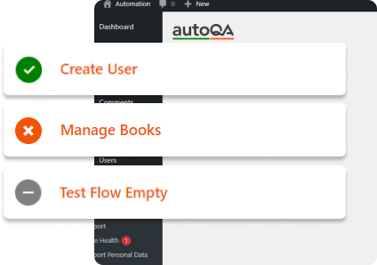

Flows
Each flow acts as a customizable test case, allowing users to simulate and verify various processes within their application. A flow consists of a series of steps, which represent specific actions or interactions. Whether it's a simple user journey or a complex workflow, this feature enables detailed testing by breaking down tasks into manageable steps, ensuring that every aspect of your process works seamlessly from start to finish.
